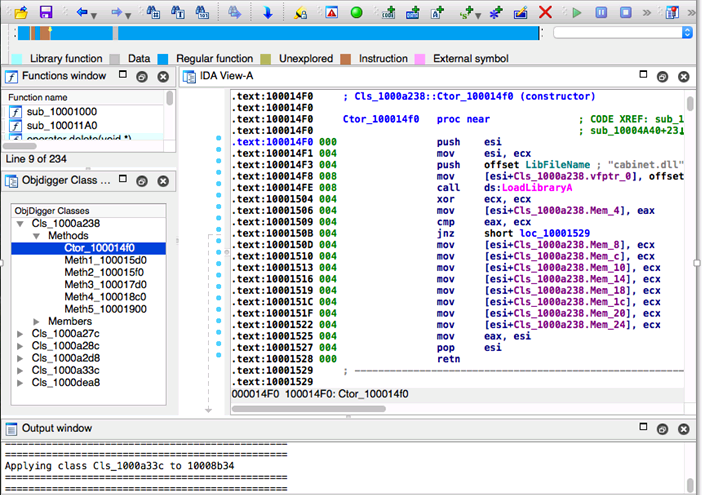

CS373 Weekly Writeups
Week 1
In the wake of the largely publicized disclosures of the Meltdown and, more serious, Spectre vulnerabilities, it’s more important than ever for the common user to be educated on security. As a student of computer science, I feel it’s more important than ever to understand how a threat is detected, prevented, and analyzed.
Also important is understanding the bad actor and their intentions. This week we covered the basics of malware. This includes:
- Understanding the malware industry, past to present
- Different variations of malware. This includes viruses, adware, spyware, worms, ransomware and more.
- Infection vectors
- Tools used by engineers to reverse engineer and analyze the malware statically and behaviorally.
But by far my biggest take away in this week’s materials are understanding and identifying the motives for a bad actor to move forward in committing to what’s known as the APT kill chain. This can be partially solved by reviewing the malware code, but also on how the malware is implemented. I find the instructors example of a USB infection interesting, in that the log created by the malware is only retrievable by the original USB which caused infection as a sign that it’s an internal attack.
There are 2 ways to analyze malware
- Static – this means analyzing the code in the malware along with the strings found in the malware
- Behavior – understanding what the malware is attempting to do via it’s HTTP requests and process creation, modification, and deletion in the operating system
In any case below are tools that anyone curious to reverse engineer a malware will need and why they need it:
- FakeNet – to monitor all TCP/IP traffic attempting to connect on various ports.
- Flypaper – to block all of the outgoing TCP/IP traffic
- Process Monitor – monitors the processes executing on Windows and in specific, what is touching and what resources is the process using.
- Process Explorer – a useful to complete a string dump of the process
- McAfee’s File Insight – a useful tool to attempt to reverse engineer what the source code is doing via assembly language, string dumps, and other plugins.
- IDA Pro – another product that will help you reverse engineer an executable
- Command Prompt – having some basic knowledge of command prompt can help someone detect if the malware has scheduled new tasks, created files hidden to the user and more.
Static Analysis
Engineers use techniques like string analysis, binary analysis and source analysis as a means of static analysis. In Lab 1, I performed a string analysis of the evil.exe file by opening the file with McAfee’s File Insight tool. As the image below shows, the executable had various interesting strings, including strings to HTTP sites where the malware would download more than 1 executable.

Binary tools like the one pictured below are also used to analyze the malware’s source code in assembly. This helps determine what the malware is attempting to do by checking what registry’s and driver’s it’s attempting to utilize in the code.
Engineer’s will need to use tools to monitor the malwares behavior within the operating system, identifying artifacts it leaves behind. An example of such a tool is FakeNet, or even Wireshark, that monitors the HTTP requests attempted by the malicious executable. Below is an example of a malicious malware attempting to download another executable, more than likely also malware.
Conclusion
Malware analysis is similar to piecing together a puzzle. It really does require thinking outside the box and reviewing multiple artifacts in order to understand the malwares payload and it's intentions. This is not exclusive to just analyzing the malwares binary/source code, but also it's strings and behaviors, in particular within a network. Malware analysis can be extensively but imperative in order to prevent your data from being at risk of exposure.